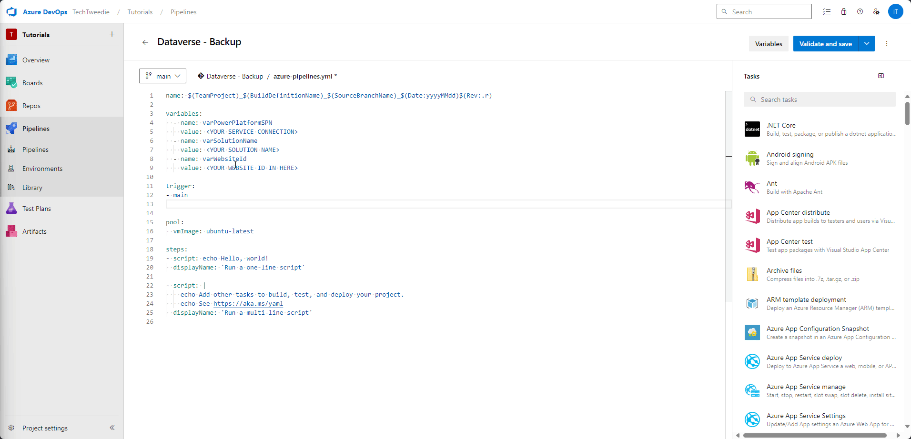
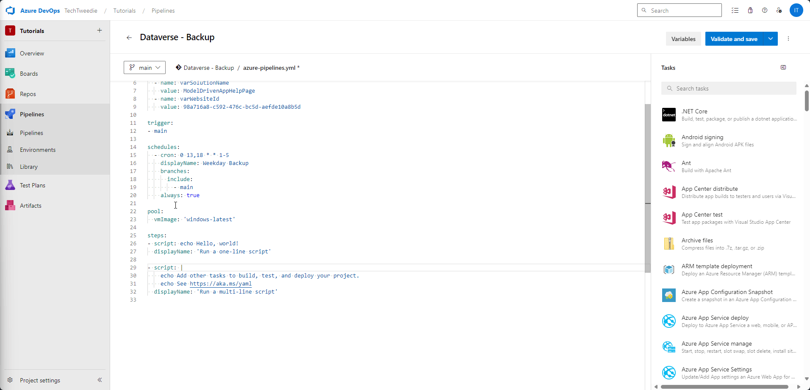

Backup Dataverse Development Environment
Introduction
Ever wondered what would happen if you lost your development environment? How do you feel about having to do all of that work again? What about if you spot a problem days later? Can you remember the value you changed three days ago in that flow? Have you ever seen someone delete the website record by mistake.
These are all situations I have been in over the last few years, and having a Pipeline in place to ensure backup of your hard work is extremely important. That historical record can save you many hours.
Today am going to take you through how to create a DevOps Pipeline to backup your environment.
You can watch the accompanying YouTube video here
Prerequisites for Setting Up a Pipeline in Azure DevOps to Export a Solution from Dataverse
-
Azure DevOps Organization:
- Ensure you have an Azure DevOps organization. If not, you can create one for free here.
-
Azure Repos:
- A repository where your pipeline code will reside.
-
Dataverse Environment:
- Ensure you have access to the Dataverse environment from which you want to export the solution.
-
Service Principal:
- Create a service principal in Azure Active Directory (AAD) with the necessary permissions to access Dataverse.
-
Power Platform Build Tools:
- Install the Power Platform Build Tools extension in Azure DevOps. This extension provides tasks to automate common build and deployment activities related to Power Platform.
Create our backup pipeline
Step 1: Navigate to the Pipelines Screen
From within our Devops Project screen, we need to navigate to Pipelines > Pipelines

Step 2: Create first Pipeline
Then we are going to create our first pipeline. To do this click on create Pipeline, then choose Azure Repos, and then choose starter pipeline. Once we have done that we will then run our pipeline.

Step 3: Pipeline results
After running our pipeline for the first time we can see we have an issue, for our DevOps organisation, in this case TechTweedie we don’t have parallelism. If you don’t see this error and your pipeline runs, then please skip to step X

Step 4: Request Parallelism
To enable this we need to fill out this form https://aka.ms/azpipelines-parallelism-request

Step 5: After a little while approval comes through
An email comes through outlining that parallelism in Azure DevOps has been enabled.

Step 6: Lets try again
Trying again we can now see our pipeline ran successfully. We now have a working Pipeline.

Step 7: Lets edit our pipeline
We now need to edit our pipeline, and start adding the actions to export our components from dataverse.

Step 8
Next we are going to set the name and some variables to the below;
name: $(TeamProject)_$(BuildDefinitionName)_$(SourceBranchName)_$(Date:yyyyMMdd)$(Rev:.r)
variables:
- name: varPowerPlatformSPN
value: <YOUR SERVICE CONNECTION>
- name: varSolutionName
value: <YOUR SOLUTION NAME>
- name: varWebsiteId
value: <YOUR WEBSITE ID IN HERE>

Step 9: Set a sechedule for our pipeline
Then we are going to set a schedule for our pipeline to trigger on. In this example it will trigger on the hour, at midnight, 1pm, 6pm, Monday to Friday every week.
trigger: none
schedules:
- cron: 0 0,13,18 * * 1-5
displayName: Weekday Backup
branches:
include:
- main
always: true

Step 10: Update our variables
Next we need to update our variables, with value to link the pipeline to our environment.
In this example I am using the below values, make sure you change these for your pipeline.
variables:
- name: varPowerPlatformSPN
value: Dataverse - Backup
- name: varSolutionName
value: ModelDrivenAppHelpPage
- name: varWebsiteId
value: 98a716a8-c592-476c-bc5d-aefde10a8b5d

Step 11: Change VM pool
Next we are going to change the vm pool image over to be vmImage: 'windows-latest'

Step 12: Check out our Repository
We want to check out the repository that we want to update with the latest solution export from Power Platform.
- checkout: self
persistCredentials: true
clean: true

Step 13: Add build tools
Delete what is already there and add in the Power Platform build tool step

Step 14: Add Who am I and then Test
Add in the Who Am I step so we can test the connection, and then don’t forget to change over the variable to make it easier to re-use the pipeline later on future projects.

Step 15: Lets test it
Lets test our work so far.

Step 16: Set version number
Now that it’s working we are going to set the solution version, we can do this by adding a task in, called Set Solution Version. Once we add this task we are going to update it with out variable for the Power Platform SPN, and Solution Name. Then we are going to set the Solution Version Number to be '1.0.0.$(Build.BuildID)'. This pulls in the Build ID ensuring that the solution number is always unique.

Step 17: Export the solution as Managed
Then we are going to export the solution, once again we are going to set the Power Platform SPN, Solution Name, we are also going to set the Solution Output File to $(Build.ArtifactStagingDirectory)\$(varSolutionName)_managed.zip

Step 18: Export the solution as Un-Managed
Next we are going to copy the YAML from our last step and then change it slightly to get our unmanaged solution.

Step 19: Unpack solution
Then unpack the solution, this allows us to see what’s changed inside between runs. For this step we will set Solution Input File to $(Build.ArtifactStagingDirectory)\$(varSolutionName).zip', and the Solution Target Folder to '$(Build.SourcesDirectory)\src\solutions\$(varSolutionName)'

Step 20: Commit it
We are going to commit these changes to our repository.
echo commit all changes
git config user.email "$(Build.RequestedForEmail)"
git config user.name "$(Build.RequestedFor)"
git checkout -b main
git add --all
git commit -m "Latest solution changes."
echo push code to new repo
git -c http.extraheader="AUTHORIZATION: bearer $(System.AccessToken)" push origin main

Step 21: Lets check if it worked
Next lets check if it worked.

Oh no let’s see if we can fix it.

Let’s test it again.

Step 22: Take a look at the Repo
Looking at the repo

Pipeline Script in Full
Here is the YAML pipeline script in full
name: $(TeamProject)_$(BuildDefinitionName)_$(SourceBranchName)_$(Date:yyyyMMdd)$(Rev:.r)
variables:
- name: varPowerPlatformSPN
value: Dataverse - Backup
- name: varSolutionName
value: ModelDrivenAppHelpPage
- name: varWebsiteId
value: 98a716a8-c592-476c-bc5d-aefde10a8b5d
trigger: none
schedules:
- cron: 0 0,13,18 * * 1-5
displayName: Weekday Backup
branches:
include:
- main
always: true
pool:
vmImage: 'windows-latest'
steps:
- checkout: self
persistCredentials: true
clean: true
- task: PowerPlatformToolInstaller@2
inputs:
DefaultVersion: true
AddToolsToPath: true
- task: PowerPlatformWhoAmi@2
inputs:
authenticationType: 'PowerPlatformSPN'
PowerPlatformSPN: '$(varPowerPlatformSPN)'
- task: PowerPlatformSetSolutionVersion@2
inputs:
authenticationType: 'PowerPlatformSPN'
PowerPlatformSPN: '$(varPowerPlatformSPN)'
SolutionName: '$(varSolutionName)'
SolutionVersionNumber: '1.0.0.$(Build.BuildID)'
- task: PowerPlatformExportSolution@2
inputs:
authenticationType: 'PowerPlatformSPN'
PowerPlatformSPN: '$(varPowerPlatformSPN)'
SolutionName: '$(varSolutionName)'
SolutionOutputFile: '$(Build.ArtifactStagingDirectory)\$(varSolutionName)_managed.zip'
Managed: true
AsyncOperation: true
MaxAsyncWaitTime: '60'
- task: PowerPlatformExportSolution@2
inputs:
authenticationType: 'PowerPlatformSPN'
PowerPlatformSPN: '$(varPowerPlatformSPN)'
SolutionName: '$(varSolutionName)'
SolutionOutputFile: '$(Build.ArtifactStagingDirectory)\$(varSolutionName).zip'
Managed: false
AsyncOperation: true
MaxAsyncWaitTime: '60'
- task: PowerPlatformUnpackSolution@2
inputs:
SolutionInputFile: '$(Build.ArtifactStagingDirectory)\$(varSolutionName).zip'
SolutionTargetFolder: '$(Build.SourcesDirectory)\src\solutions\$(varSolutionName)'
SolutionType: 'Both'
- task: CmdLine@2
inputs:
script: |
echo commit all changes
git config user.email "$(Build.RequestedForEmail)"
git config user.name "$(Build.RequestedFor)"
git checkout -b main
git add --all
git commit -m "Latest solution changes."
echo push code to new repo
git -c http.extraheader="AUTHORIZATION: bearer $(System.AccessToken)" push origin main
Conclusion & Next vlog
Implementing a DevOps pipeline for backing up your Dataverse development environment is an essential practice that safeguards your work against unexpected issues and errors. By automating this process, you ensure that every change is recorded, making it easier to track modifications and recover from mistakes quickly. This pipeline provides a robust safety net, helping you avoid the frustration of lost progress and ensuring that your development efforts are always protected.
In the next post, I will delve deeper into this pipeline by adding advanced features, such as integrating Power Pages Portal, exploring and tracking changes in XML files, utilizing environment variables more effectively, and automatically generating wiki articles based on your solution components. These enhancements will further streamline your DevOps process and provide even greater control and visibility over your development environment.
If you have any questions or need more details on any of the prerequisite steps mentioned, feel free to leave a comment on the YouTube video. I am happy to create additional content to address those topics and help you get the most out of your DevOps setup.